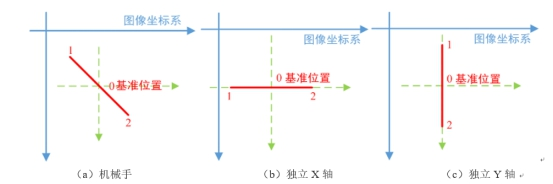
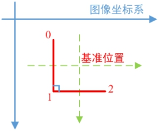
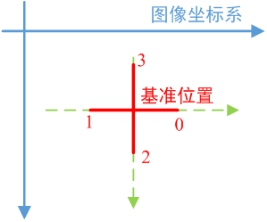

图像到平台多点关联标定：关联标定运动多次，有多组关联点，可以确定目标图像坐标系与平台坐标系的转换关系，包括旋转、缩放和平移关系。
图像到图像多点关联标定：关联运动多次，有多组关联点，但无参考标定结果，直接计算图像到图像间的映射关系。


本工具用于关联标定计算。在关联标定过程中，首先已知参考对象相机的标定结果，而后通过在参考相机与目标相机下进行关联标定运动（轴位置由关联标定轴位置获取工具计算），得到相应定位点的参考图像坐标（向量）与待标定相机下定位点的图像坐标（向量），而后通过本工具用于关联标定计算。
| 分类 | 参数名称 | 参数描述 |
|---|---|---|
| 属性窗口 | 关联标定类型 | 图像到平台单点关联标定：关联标定运动一次，只有一组关联点，只能确定目标图像坐标系与平台坐标系的平移关系，即平台坐标，旋转和缩放关系需要其他方式获取。 图像到平台多点关联标定：关联标定运动多次，有多组关联点，可以确定目标图像坐标系与平台坐标系的转换关系，包括旋转、缩放和平移关系。 图像到图像多点关联标定：关联运动多次，有多组关联点，但无参考标定结果，直接计算图像到图像间的映射关系。 |
| 图像窗口 | 无 | 无 |
| 数据链 | 参考图像坐标（向量） | 由每一次关联标定运动后参考相机定位的特征点图像坐标构成的向量，当标定计算类型为单点关联标定，则输入单个参考图像坐标即可。 |
| 图像坐标（向量） | 由每一次关联标定运动后目标相机定位的特征点图像坐标构成的向量，当标定计算类型为单点关联标定，则输入单个图像坐标即可。 |
|
| 参考标定结果 | 参考相机的标定结果，该标定结果通常由标准标定运动和标准标定计算得出。当标定计算类型为图像到图像多点关联标定时，则不必输入此项。 | |
| 高级界面 | 无 | 无 |
| 分类 | 参数名称 | 参数描述 |
|---|---|---|
| 属性窗口 | 标定结果 | 输出目标相机的相应标定结果。 |
| 执行结果 | 工具执行结果。 | |
| 执行时间 | 工具执行时间。 | |
| 图像窗口 | 无 | |
| 数据链 | 标定结果 | 输出目标相机的相应标定结果，供后序工具使用，同监视窗口参数。 |
在关联标定运动中，轴类型的不同，则关联点不同，对应的反向运动转移次数也不同。对于独立X或Y轴等单轴平台，适用于进行两点关联标定；对于XYD平台，则可以进行两点、三点或四点的关联标定。而对应不同步数的关联标定计算，输入的参考图像坐标向量与图像坐标向量中的坐标顺序要与相应的关联标定运动移动路径保持一致。具体如下：
1.两点关联标定：机械手进行两次转移运动，适用于机械手，以及独立X或Y轴等单轴平台。两点关联标定的转移运动路径，如图2所示。

表1是图2对应的位置列表，X0和Y0是机械手预设的拍照位置，即基准位置，DX和DY是机械手在X和Y方向的单位运动步长。即此时关联标定计算工具的坐标向量输入顺序为坐标0→坐标1。
| 索引 | 位置 | XY轴坐标 | X轴坐标 | Y轴坐标 |
|---|---|---|---|---|
| 0 | 基准位置的负方向 | (X0 - DX, Y0 - DY) | X0 - DX | Y0 - DY |
| 1 | 基准位置的正方向 | (X0 + DX, Y0 + DY) | X0 + DX | Y0 + DY |
2.三点关联标定：机械手进行三次转移运动，其转移运动路径，如图3所示。

表2是图3对应的位置列表，X0和Y0是机械手预设的拍照位置，即基准位置，DX和DY是机械手在X和Y方向的单位运动步长。即此时关联标定计算工具的坐标向量输入顺序为坐标0→坐标1→坐标2，且此时三坐标尽量满足直角关系。
| 索引 | 位置 | XY轴坐标 |
|---|---|---|
| 0 | 基准位置的左上 | (X0 - DX, Y0 - DY) |
| 1 | 基准位置的左下 | (X0 - DX, Y0 + DY) |
| 2 | 基准位置的右下 | (X0 + DX, Y0 + DY) |
3.四点关联标定：机械手进行四次转移运动，其转移运动路径，如图4所示。

表3是图4对应的位置列表，X0和Y0是机械手预设的拍照位置，即基准位置，DX和DY是机械手在X和Y方向的单位运动步长。即此时关联标定计算工具的坐标向量输入顺序为坐标0→坐标1→坐标2→坐标3，此时的路径0→1和路径2→3尽量满足交叉垂直关系。
| 索引 | 位置 | XY轴坐标 |
|---|---|---|
| 0 | 基准位置的正右 | (X0 + DX, Y0) |
| 1 | 基准位置的正左 | (X0 - DX, Y0) |
| 2 | 基准位置的正下 | (X0 , Y0 + DY) |
| 3 | 基准位置的正上 | (X0 , Y0 - DY) |
实际项目中的关联标定，可以通过一次机械手移动并同时定位多个特征点来模拟相应步数的关联标定。但对于输入的三点或四点关联标定计算的坐标向量顺序，仍要与详细说明的顺序保持一直。即对于三点关联标定计算，尽量让三点呈直角关系，且第二个点为直角顶点；对于四点关联标定计算，输入的四点路径0→1和路径2→3尽量满足交叉垂直关系。
参见“\Samples\XY轴4步关联标定+对位计算.gvp”。